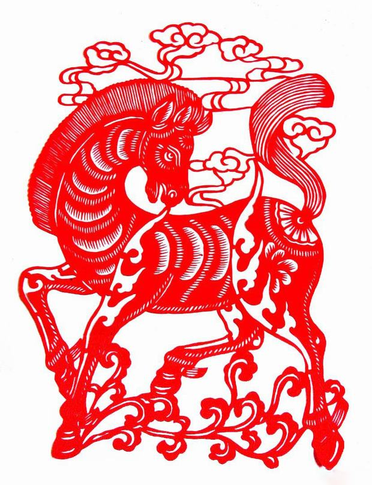

Horse
The Horse's Personality:
People born in a year of the Horse are extremely animated, active and energetic. Horses love to be in a crowd, and they can usually be seen on such occasions as concerts, theater performances, meetings, sporting events, and parties. With a deft sense of humor, Horses are masters of repartee. They love to take center stage and delight audiences everywhere. Sometimes, the Horse is a little self-centered, but it doesn't mean that s/he can not be interested in others' problems. Horses are really more cunning than intelligent, and that is probably why most Horse people lack real confidence.
The Best Careers for Horses
Jobs involving communicating with others attract Horses most. The Horse sign stands for leadership, management, and decision-making. Horses dislike taking orders. The Horse can make it in any career that demands neither solitude nor meditation, for he is an extrovert and he needs to be surrounded by people who approve of him and flatter him.
Good career choices for Horses include: publicist, sales representative, journalist, language instructor, translator, bartender, performer, tour operator, librarian or pilot.
The Luckiest Things for Horses
- Lucky numbers: 2, 3, 7, and numbers containing them (like 23 and 37)
- Lucky days: the 5th and 20th of Chinese lunar months
- Lucky colors: yellow and green
- Lucky flowers: calla lily and jasmine
- Lucky direction: east, west, and southwest
- Lucky months: the 4th, 9th, and 12th Chinese lunar months


Source: chinahighlights.com